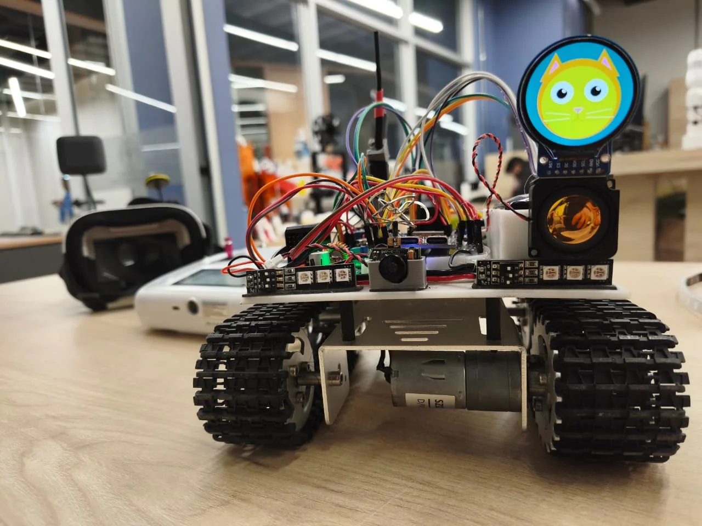
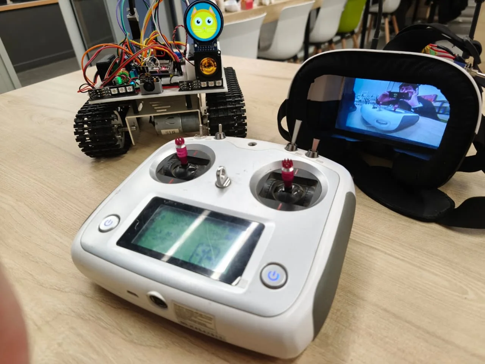
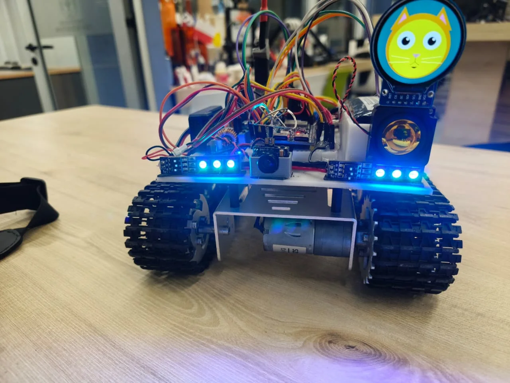
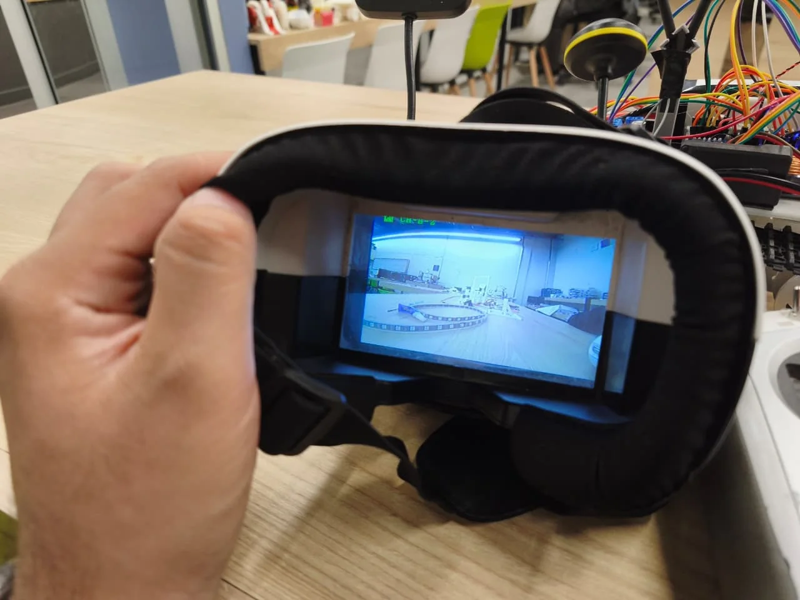
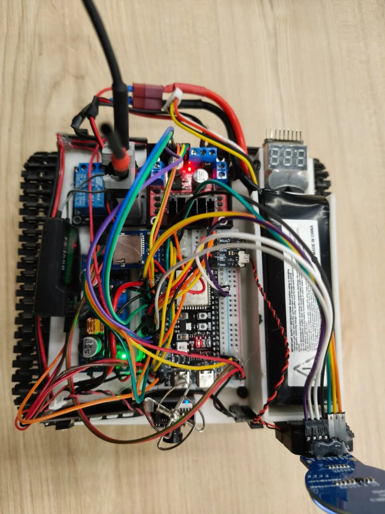
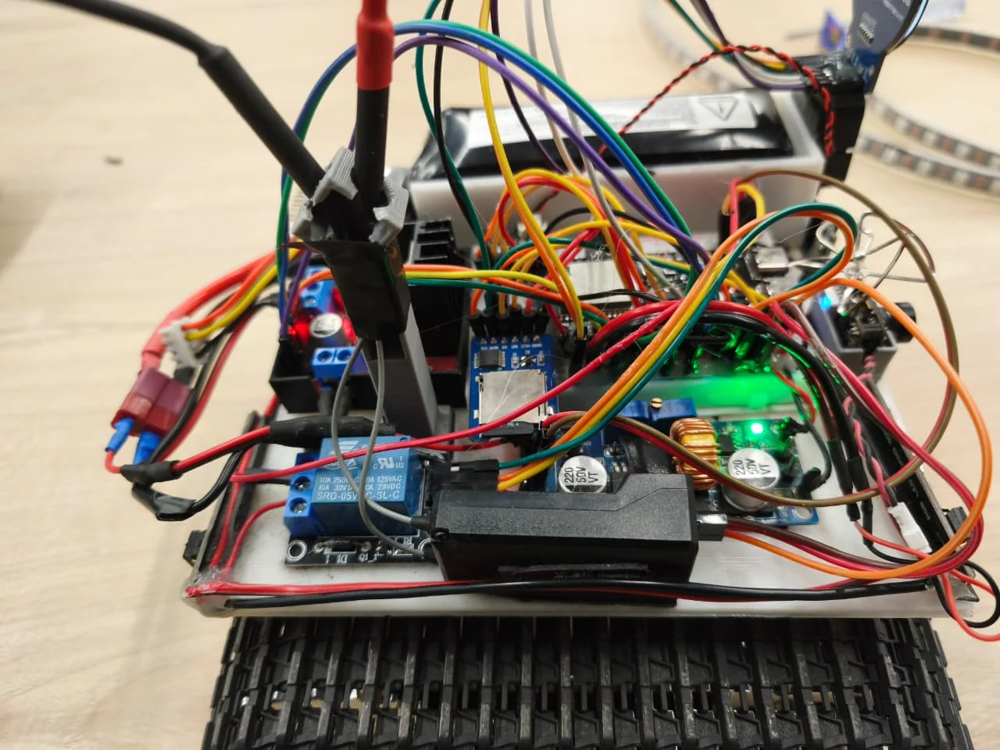

- ESP32-S3
- iBUS
- FPV
- Audio I2S
Auto RC V2: vehículo de orugas con ESP32-S3 y FPV
Versión mejorada de mi vehículo RC: un chasis de orugas con ESP32-S3, mando FlySky, cámara FPV, luces y sonidos MP3. Una pantalla redonda muestra un gato que mueve la boca durante la reproducción.

Tecnologías
- ESP32-S3
- iBUS
- FPV
- Audio I2S
Objetivo del proyecto
Integrar movimiento, iluminación, audio y una pantalla animada en un vehículo radiocontrolado, con visión desde la cámara frontal mediante un equipo FPV.
Qué incorpora la versión 2
La versión anterior del portafolio utilizaba Arduino MEGA y una cámara Wi-Fi. Esta V2 utiliza un ESP32-S3 como controlador y reúne recepción iBUS desde el mando FlySky FS-i6S, tracción por orugas, luces de 12 V con relé, reproducción MP3 desde microSD y una pantalla GC9A01A con un gato animado. La imagen de la cámara se visualiza en un visor FPV mediante un enlace de video separado.
Arquitectura o funcionamiento
El receptor FlySky entrega las órdenes al ESP32-S3 por iBUS. El ESP32 controla dos motores de 12 V mediante un L298N y activa las luces a través de un relé. La microSD almacena cinco archivos MP3; el audio se envía por I2S al módulo LMD2718+NS4168 y al parlante. La pantalla y la microSD comparten SPI con selección independiente. Una batería LiPo de 12 V alimenta el montaje y un regulador LM2596S proporciona una salida ajustada a 5 V para la electrónica compatible.
Flujo de funcionamiento
Los sticks del mando ordenan avance, retroceso y giro sobre el propio eje. CH5 conmuta las luces; CH6, CH7 y CH8 seleccionan o detienen los sonidos. Durante la reproducción, la boca del gato alterna entre abierta y cerrada. El visor FPV permite observar la imagen captada desde el vehículo.
Desarrollo e implementación
El firmware Arduino en C++ separa la reproducción de audio en una tarea FreeRTOS y utiliza un mutex para coordinar el acceso SPI de la pantalla y la microSD. El lector iBUS valida las tramas recibidas antes de actualizar los canales. El repositorio reúne el programa completo, dos sketches de prueba de audio y la documentación de conexiones y uso.
Desafíos técnicos
La coordinación de audio, pantalla y recepción se distribuye entre el ciclo principal y la tarea de audio. El control detiene los motores y pone la salida de luces en LOW cuando pasan más de 300 ms sin una trama iBUS válida; el audio puede continuar. Si el receptor mantiene tramas con valores retenidos, ese temporizador no detecta la pérdida del enlace de radio. El movimiento usa velocidades fijas por maniobra y no mezcla giro y avance de forma proporcional.
Resultados
El montaje fotografiado reúne el vehículo de orugas, el mando, el visor FPV, las luces, el parlante y la pantalla del gato. El código y la documentación permiten consultar cómo se controlan estos subsistemas. La animación responde al estado de reproducción del audio; no analiza la voz ni sincroniza la boca con las palabras.
Hardware utilizado
- Chasis de tanque con orugas y dos motores de 12 V
- ESP32-S3 y controlador de motores L298N
- Mando FlySky FS-i6S y receptor con salida iBUS
- Batería LiPo de 12 V y regulador LM2596S ajustado a 5 V
- Pantalla redonda SPI GC9A01A de 240 × 240 píxeles
- Lector microSD y tarjeta con cinco archivos MP3
- Módulo de audio LMD2718+NS4168 y parlante
- Relé y luces de 12 V
- Cámara frontal, enlace de video y visor FPV
Software y tecnologías
- Firmware C++ con Arduino-ESP32
- FreeRTOS para la tarea de audio y coordinación SPI
- ESP8266Audio para decodificar MP3
- Adafruit GFX y Adafruit GC9A01A para la pantalla
- UART iBUS, PWM de motores, SPI e I2S
Imágenes del proyecto




